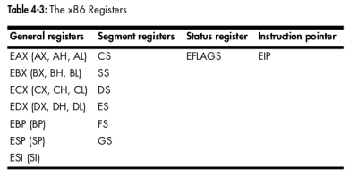
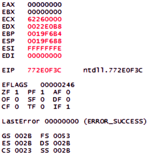
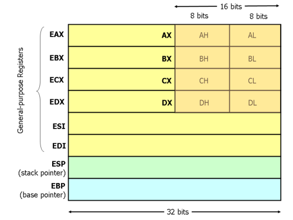
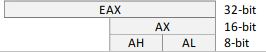
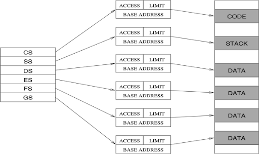
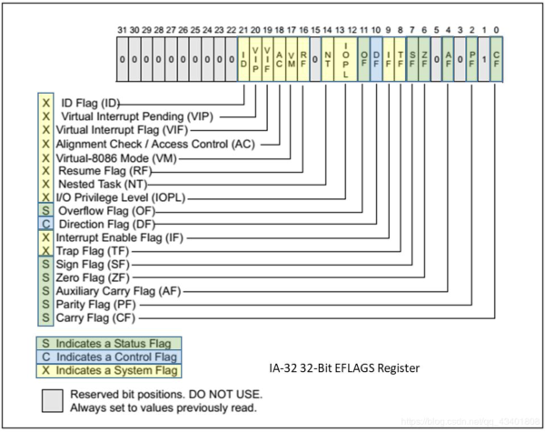

# x86 Registers
Processor registers are small sections of data storage that sit close to the CPU.
Their contents can be accessed more quickly than RAM or cache, so are useful during arithmetic operations as temporary data storage.
On a 32bit processor, the main registers are 32bits in size.
On x86, registers can divided into 4 categories:
•
General registers - used by the CPU during exeuction
•
Segment registers - used to track sections of memory
•
Status register - used to make decisions
•
Instruction pointers - keep track of the next instruction to execute (just EIP)
Here's a table of all the x86 registers:
And here is how the registers look in a OllyDbg:
## General Purpose Registers
On a 32bit x86 processor there are 9 general registers.
The E stands for Extended.
•
EAX - Accumulator Register - used for arithmetic operations
•
EBX - Base Register - used as a pointer to data
•
ECX - Counter Register - used in shift/rotate instructions & loops
•
EDX - Data Register - used in arithmetic and I/O operations
•
ESI - Source Index - used as a pointer to a source in stream operations
•
EDI - Destination Index - used as a pointer to a destination in stream operations
•
EBP - Stack Base Pointer - points to the base of the stack
•
ESP - Stack Pointer - points to the top of the stack
•
EIP - Instruction Pointer - points to the next instruction to execute
General registers store data or memory addresses.
All general registers are 32 bits in size (or 4 bytes). They can hold data from 0x0 to 0xFFFFFFFF.
Originally, registers were for specific things (as mentioned above).
Nowadays they're all used interchangeably, except for
EBP,
ESP and
EIP.
EBP points to the base of the stack.
ESP points to the top of the stack.
And
EIP points to the next instruction to be executed.
### EIP - The instruction pointer
The EIP is the instruction pointer register, and contains the address of the next instruction to execute.
Its only purpose is to tell the processor what to do next.
If you control EIP, you control what the CPU executes.
This means as an attacker you will want to gain control of the EIP.
In a buffer overflow attack,
an attacker will write attack code (shellcode) into memory, take control of EIP, and then modify the address of EIP to point to their attack code in memory. At this point they have succesfully taken control of the system, and their attack code is running.
### EAX, EBX, ECX, and EDX - Accessing their lower bits
For the first 4 registers - EAX, EBX, ECX and EDX - you can also reference the 8bit and 16bit portions of their register.
•
EAX is the whole 32bit register
•
AX is the 16bit portion of the register
•
AH (higher) is the higher 8 bits of the 16bit AX register
•
AL (lower) is the lower 8 bits of the 16bit AX register
 For example, EAX contains the value
0xA9DC81F5.
When programming you could reference:
•
EAX (4 bytes) -
0xA9DC81F5•
AX (2 bytes) -
0x81F5•
AH (1 byte) -
0x81•
AL (1 byte) -
0xF5### General Purpose Registers and Instructions
Some x86 instructions use specific registers by definition.
e.g. multiplication and division instructions always use EAX and EDX
General registers might also be used in a consistent manner throughout a program.
This is called
convention.
For example, compilers will use certain registers in a specific way.
Knowledge of how different compilers use registers can help you analyse code more quickly.
(because you're not wasting time figuring out how a register is being used).
For most x86 programs,
EAX typically contains the return value of function calls.
If you see the EAX register used immediately after a function call, you're probably looking at the return value of that function.
## Segment Registers
Segment registers point to sections of your program in memory.
•
CS - Code Segment - points to the code section
•
SS - Stack Segment - points to the stack section
•
DS - Data Segment - points to the data section
•
ES - Extra Segment - points to extra data
•
FS - F Segment - points to more extra data (F comes after E)
•
GS - G Segment - points to still more extra data (F comes after F)
Nowadays, segment registers typically all point to the same place because on modern operating systems memory paging is used instead.
The exception to this rule are the
FS and
GS registers, which point to thread specific data.
## EFLAGS / Status Register
The EFLAGS / Status register is a 32bit register that's used as a collection of boolean value bits to the store statuses for the processor.
### Useful flags
Some of the more useful flags are detailed here.
ZF - Zero Flag• Set if the result an arithmetic operation is equal to 0
CF - Carry Flag• Set when the result of an operation is too large or too small exceeds the maximum bits to be contained in a register
OF - Overflow Flag• Set when signed arithmetic operations result in a value too large for the register to contain
SF - Sign Flag• Set if the result of an operation is negative
TF - Trap Flag• Set if step by step debugging is enabled (execute 1 instruction at a time)